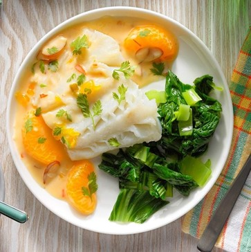

Citrus Coconut Steamed Cod
What is Citrus Coconut Steamed Cod?
Citrus and coconut come together to create a delectable steamed cod recipe that’s both light and flavorful. This dish combines the tangy freshness of citrus fruits with the rich creaminess of coconut milk to elevate the delicate, flaky texture of the cod. With the perfect balance of sweet, sour, and savory flavors, this recipe is sure to become a favorite in your household.
Ingredients
4 cod fillets (6 ounces each)
1 tablespoon cornstarch
1 cup canned coconut milk
1/2 cup orange juice
2 tablespoons sweet chili sauce
1 teaspoon minced fresh gingerroot
1 teaspoon soy sauce
1 can (11 ounces) mandarin oranges, drained
1 green onion, chopped
2 tablespoons sliced almonds
1 tablespoon sesame oil
Minced fresh cilantro
Instructions / How to Cook
1. In a large saucepan, place a steamer basket over 1 in. water. Place cod in basket. Bring water to a boil. Reduce heat to maintain a low boil; steam, covered, until fish just begins to flake easily with a fork, 8-10 minutes.
2. Meanwhile, in a small saucepan, whisk cornstarch, coconut milk and orange juice until smooth. Add chili sauce, ginger and soy sauce. Cook and stir over medium heat until thickened, 1-2 minutes. Stir in oranges, green onion, almonds and sesame oil; heat through. Serve with cod; sprinkle with cilantro.